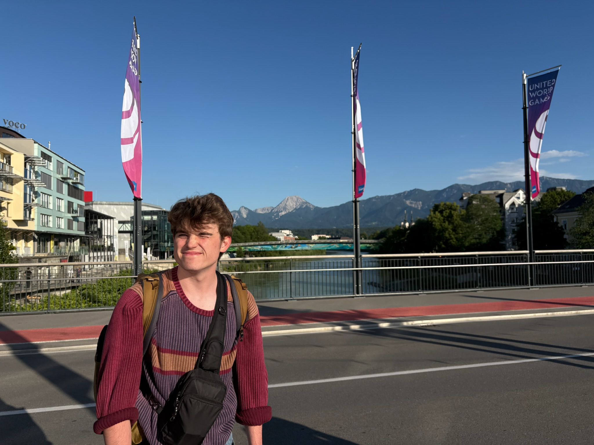

Jacob Nicholson is a designer interested in computation born in Southeast Ohio. He is currently leading product design for UGen’s Orthopedics team, attempting to simplify complex processes in physical therapy and recovery.
While acquiring his BFA at Kent State University he stayed busy becoming the first person of his design program to ever hold a developer title on the IT solutioning team, where he worked with computer science students and taught himself to code while sometimes secretly also designing greeting cards for the Division of Philanthropy. Jacob was selected to be a part of the Design Innovation Hub’s student fellowship in 2024, where he led collaborative research projects.
In 2025, he interned as a Graphic Designer at the Ohio Department of Natural Resources, where he was ecstatic to help celebrate the beauty of his home.
Outside of work, Jacob loves to go backpacking, be it in a new forest or a new country, and revisit art projects. He’s recently picked up an interest in specialty tea.
